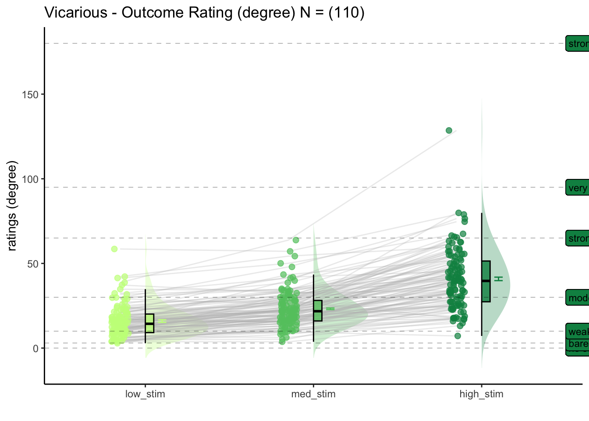
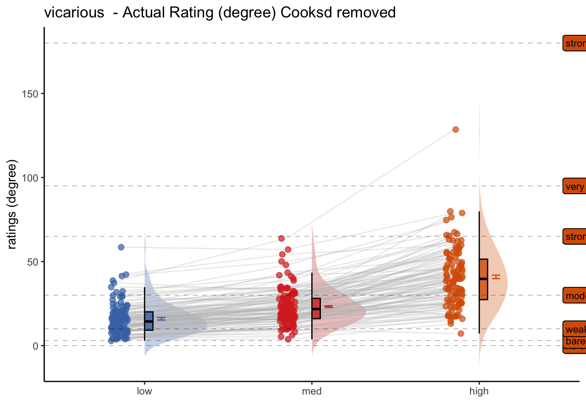
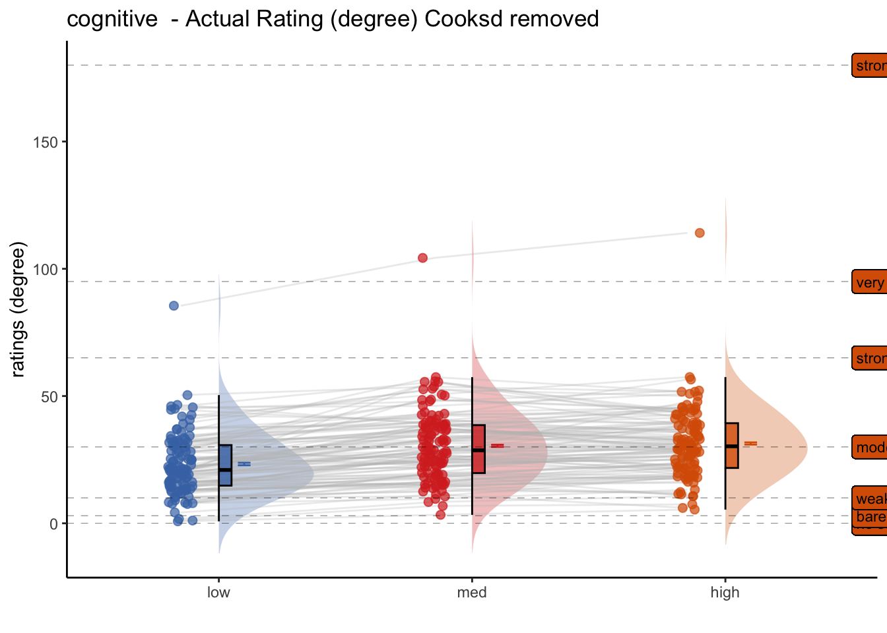

Chapter 4 [beh] outcome ~ stimulus_intensity
What is the purpose of this notebook?
Here, I plot the outcome ratings as a function of stimulus intensity
- Main model:
lmer(outcome_rating ~ stim) - Main question: do outcome ratings differ as a function of stimulus intensity? We should expect to see a linear effect of stimulus intensity.
- If there is a main effect of cue on expectation ratings, does this cue effect differ depending on task type?
- IV: stim (high / med / low)
- DV: outcome rating
FIX: plot statistics in random effect plot - what is broken?
Code
# parameters _____________________________________ # nolint
subject_varkey <- "src_subject_id"
iv <- "param_stimulus_type"; iv_keyword <- "stim"; dv <- "event04_actual_angle"; dv_keyword <- "outcome"
xlab <- ""; ylim = c(0,180); ylab <- "ratings (degree)"
subject <- "subject"
exclude <- "sub-0001|sub-0003|sub-0004|sub-0005|sub-0025|sub-0999"
subjectwise_mean <- "mean_per_sub"; group_mean <- "mean_per_sub_norm_mean"; se <- "se"
color_scheme <- if (any(startsWith(dv_keyword, c("expect", "Expect")))) {
color_scheme <- c("#1B9E77", "#D95F02")
} else {
color_scheme <- c("#4575B4", "#D73027")
}
print_lmer_output <- FALSE
ggtitle_phrase <- " - Outcome Rating (degree)"
analysis_dir <- file.path(main_dir, "analysis", "mixedeffect", paste0("model04_iv-",iv_keyword,"_dv-",dv_keyword), as.character(Sys.Date()))
dir.create(analysis_dir, showWarnings = FALSE, recursive = TRUE)4.1 Pain
For the pain task, what is the effect of stimulus intensity on outcome ratings?
[ INSERT DESCRIPTION ]
## Warning in geom_line(data = subjectwise, aes(group = .data[[subject]], x =
## as.numeric(as.factor(.data[[iv]])) - : Ignoring unknown aesthetics: fill## Warning: Using `size` aesthetic for lines was deprecated in ggplot2 3.4.0.
## ℹ Please use `linewidth` instead.
## This warning is displayed once every 8 hours.
## Call `lifecycle::last_lifecycle_warnings()` to see where this warning was
## generated.
4.2 Vicarious
For the vicarious task, what is the effect of stimulus intensity on outcome ratings?
[ INSERT DESCRIPTION ]
## Warning: Model failed to converge with 1 negative eigenvalue: -8.5e+01## Warning in geom_line(data = subjectwise, aes(group = .data[[subject]], x =
## as.numeric(as.factor(.data[[iv]])) - : Ignoring unknown aesthetics: fill
4.3 Cognitive
For the cognitive task, what is the effect of stimulus intensity on outcome ratings?
[ INSERT DESCRIPTION ]
## Warning: Model failed to converge with 1 negative eigenvalue: -1.1e+02## Warning in geom_line(data = subjectwise, aes(group = .data[[subject]], x =
## as.numeric(as.factor(.data[[iv]])) - : Ignoring unknown aesthetics: fill
4.4 for loop
## boundary (singular) fit: see help('isSingular')## Linear mixed model fit by REML. t-tests use Satterthwaite's method [
## lmerModLmerTest]
## Formula:
## as.formula(reformulate(c(iv, sprintf("(%s|%s)", iv, subject_keyword)),
## response = dv))
## Data: df
##
## REML criterion at convergence: 52938.5
##
## Scaled residuals:
## Min 1Q Median 3Q Max
## -4.5365 -0.5608 -0.0002 0.5695 4.6143
##
## Random effects:
## Groups Name Variance Std.Dev. Corr
## src_subject_id (Intercept) 952.46 30.862
## param_stimulus_typelow_stim 127.22 11.279 -0.47
## param_stimulus_typemed_stim 29.79 5.458 -0.24 0.97
## Residual 448.14 21.169
## Number of obs: 5851, groups: src_subject_id, 110
##
## Fixed effects:
## Estimate Std. Error df t value Pr(>|t|)
## (Intercept) 80.3242 2.9886 109.1411 26.88 <2e-16 ***
## param_stimulus_typelow_stim -29.2521 1.2974 107.5783 -22.55 <2e-16 ***
## param_stimulus_typemed_stim -13.7621 0.8652 148.5592 -15.90 <2e-16 ***
## ---
## Signif. codes: 0 '***' 0.001 '**' 0.01 '*' 0.05 '.' 0.1 ' ' 1
##
## Correlation of Fixed Effects:
## (Intr) prm_stmls_typl_
## prm_stmls_typl_ -0.455
## prm_stmls_typm_ -0.236 0.718
## optimizer (nloptwrap) convergence code: 0 (OK)
## boundary (singular) fit: see help('isSingular')## Warning in geom_line(data = subjectwise, aes(group = .data[[subject]], x =
## as.numeric(as.factor(.data[[iv]])) - : Ignoring unknown aesthetics: fill## Coordinate system already present. Adding new coordinate system, which will
## replace the existing one.
## boundary (singular) fit: see help('isSingular')## Linear mixed model fit by REML. t-tests use Satterthwaite's method [
## lmerModLmerTest]
## Formula:
## as.formula(reformulate(c(iv, sprintf("(%s|%s)", iv, subject_keyword)),
## response = dv))
## Data: df
##
## REML criterion at convergence: 56882.7
##
## Scaled residuals:
## Min 1Q Median 3Q Max
## -5.5482 -0.5779 -0.1812 0.4475 6.1884
##
## Random effects:
## Groups Name Variance Std.Dev. Corr
## src_subject_id (Intercept) 283.44 16.836
## param_stimulus_typelow_stim 172.13 13.120 -0.88
## param_stimulus_typemed_stim 98.63 9.931 -0.85 1.00
## Residual 448.25 21.172
## Number of obs: 6313, groups: src_subject_id, 110
##
## Fixed effects:
## Estimate Std. Error df t value Pr(>|t|)
## (Intercept) 40.822 1.681 108.598 24.29 <2e-16 ***
## param_stimulus_typelow_stim -24.936 1.426 109.210 -17.49 <2e-16 ***
## param_stimulus_typemed_stim -17.614 1.162 114.541 -15.15 <2e-16 ***
## ---
## Signif. codes: 0 '***' 0.001 '**' 0.01 '*' 0.05 '.' 0.1 ' ' 1
##
## Correlation of Fixed Effects:
## (Intr) prm_stmls_typl_
## prm_stmls_typl_ -0.837
## prm_stmls_typm_ -0.784 0.862
## optimizer (nloptwrap) convergence code: 0 (OK)
## boundary (singular) fit: see help('isSingular')## Warning in geom_line(data = subjectwise, aes(group = .data[[subject]], x =
## as.numeric(as.factor(.data[[iv]])) - : Ignoring unknown aesthetics: fill## Coordinate system already present. Adding new coordinate system, which will
## replace the existing one.## boundary (singular) fit: see help('isSingular')## Linear mixed model fit by REML. t-tests use Satterthwaite's method [
## lmerModLmerTest]
## Formula:
## as.formula(reformulate(c(iv, sprintf("(%s|%s)", iv, subject_keyword)),
## response = dv))
## Data: df
##
## REML criterion at convergence: 54866.8
##
## Scaled residuals:
## Min 1Q Median 3Q Max
## -3.7173 -0.6283 -0.1660 0.4545 7.0548
##
## Random effects:
## Groups Name Variance Std.Dev. Corr
## src_subject_id (Intercept) 176.9233 13.3013
## param_stimulus_typelow_stim 8.2230 2.8676 -0.75
## param_stimulus_typemed_stim 0.4181 0.6466 0.37 0.33
## Residual 374.7596 19.3587
## Number of obs: 6220, groups: src_subject_id, 110
##
## Fixed effects:
## Estimate Std. Error df t value Pr(>|t|)
## (Intercept) 31.4642 1.3417 109.5625 23.451 <2e-16 ***
## param_stimulus_typelow_stim -8.1551 0.6623 106.7910 -12.313 <2e-16 ***
## param_stimulus_typemed_stim -1.0096 0.6056 718.4229 -1.667 0.0959 .
## ---
## Signif. codes: 0 '***' 0.001 '**' 0.01 '*' 0.05 '.' 0.1 ' ' 1
##
## Correlation of Fixed Effects:
## (Intr) prm_stmls_typl_
## prm_stmls_typl_ -0.500
## prm_stmls_typm_ -0.186 0.465
## optimizer (nloptwrap) convergence code: 0 (OK)
## boundary (singular) fit: see help('isSingular')## Warning in geom_line(data = subjectwise, aes(group = .data[[subject]], x =
## as.numeric(as.factor(.data[[iv]])) - : Ignoring unknown aesthetics: fill## Coordinate system already present. Adding new coordinate system, which will
## replace the existing one.
4.5 Lineplot
Code
library(ggpubr)
DATA = as.data.frame(combined_se_calc_cooksd)
color = c( "#4575B4", "#D73027")
LINEIV1 = "stim_ordered"
LINEIV2 = "cue_ordered"
MEAN = "mean_per_sub_norm_mean"
ERROR = "se"
dv_keyword = "actual"
p1 = plot_lineplot_onefactor(DATA, 'pain',
LINEIV1, MEAN, ERROR, color, xlab = "Stimulus intensity" , ylab= "Outcome rating", ggtitle = 'pain' )
p2 = plot_lineplot_onefactor(DATA,'vicarious',
LINEIV1, MEAN, ERROR, color,xlab = "Stimulus intensity" , ylab= "Outcome rating",ggtitle = 'vicarious')
p3 = plot_lineplot_onefactor(DATA, 'cognitive',
LINEIV1, MEAN, ERROR, color,xlab = "Stimulus intensity" , ylab= "Outcome rating",ggtitle = 'cognitive')
#grid.arrange(p1, p2, p3, ncol=3 , common.legend = TRUE)
ggpubr::ggarrange(p1,p2,p3,ncol = 3, nrow = 1, common.legend = TRUE,legend = "bottom")
Code
plot_filename = file.path(analysis_dir,
paste('lineplot_task-all_rating-',dv_keyword,'.png', sep = ""))
ggsave(plot_filename, width = 15, height = 6)